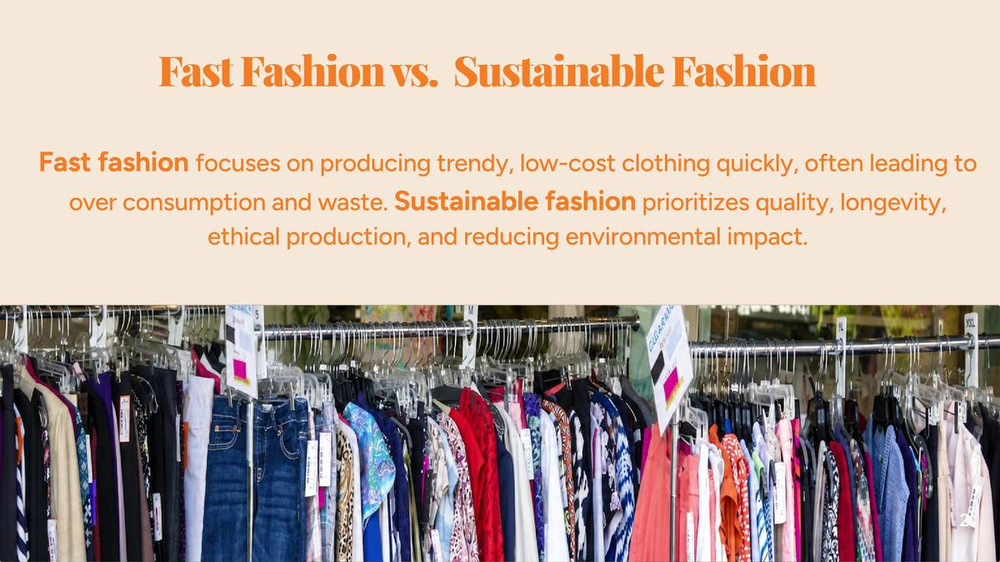
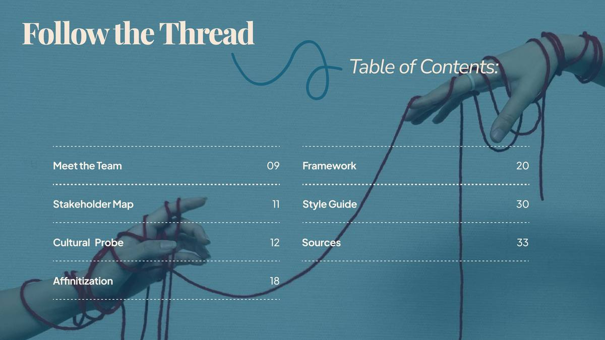

Fast fashion produces 10% of global pollution — more than international flights and maritime shipping combined. 85% of textiles end up in landfills each year, and 80 billion garments are consumed globally, 400% more than two decades ago. Yet sustainable fashion remains inaccessible: using the Mall of Georgia as a reference point, there is one dedicated sustainable or ethical fashion store for every twenty fast fashion brands.
The core challenge: how can Gen Z easily understand the sustainability, quality, and longevity of the clothing they purchase?

